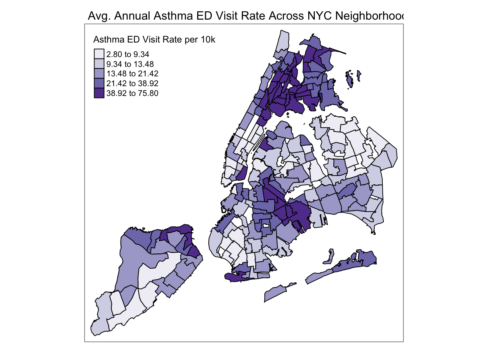

Zander’s Brainstorming Page
Tree Distribution, Ecological Variables, and Health Relationships
library(tidyverse)
library(ggridges)
library(patchwork)
library(plotly)
library(sf)
library(tmap)
library(tmaptools)
theme_set(theme(legend.position = "bottom"))
options(
ggplot2.continuous.colour = "viridis",
ggplot2.continuous.fill = "viridis"
)
scale_colour_discrete = scale_colour_viridis_d
scale_fill_discrete = scale_fill_viridis_dtrees_2015_cleaned = read_csv("large_tree_data/tree_2015_cleaned.csv")## Rows: 683788 Columns: 39
## ── Column specification ────────────────────────────────────────────────────────
## Delimiter: ","
## chr (22): curb_loc, status, health, spc_latin, spc_common, guards, sidewalk,...
## dbl (17): tree_id, block_id, tree_dbh, stump_diam, postcode, community_board...
##
## ℹ Use `spec()` to retrieve the full column specification for this data.
## ℹ Specify the column types or set `show_col_types = FALSE` to quiet this message.trees_dbh = trees_2015_cleaned |>
drop_na(tree_dbh) |>
group_by(borough, nta_name) |>
summarize(
n_trees = n(),
avg_dbh = mean(tree_dbh)) |>
arrange(desc(avg_dbh))## `summarise()` has grouped output by 'borough'. You can override using the
## `.groups` argument.large_tree_table = trees_dbh |>
ungroup() |>
filter(n_trees > 100) |>
filter(min_rank(desc(avg_dbh)) < 11) |>
knitr::kable(digits = 2, caption = "Top 10 Neighborhoods wth the Highest Average DBH Across Local Street Trees")
large_tree_table| borough | nta_name | n_trees | avg_dbh |
|---|---|---|---|
| Queens | Kew Gardens | 2024 | 15.56 |
| Queens | Woodhaven | 4254 | 15.41 |
| Brooklyn | Flatlands | 5589 | 15.40 |
| Staten Island | New Dorp-Midland Beach | 5452 | 15.24 |
| Brooklyn | East Flatbush-Farragut | 3008 | 15.01 |
| Brooklyn | Georgetown-Marine Park-Bergen Beach-Mill Basin | 7442 | 15.01 |
| Queens | South Ozone Park | 7321 | 14.97 |
| Queens | Jamaica Estates-Holliswood | 4254 | 14.73 |
| Queens | Oakland Gardens | 6059 | 14.73 |
| Queens | Auburndale | 5332 | 14.59 |
borough_dbh = trees_2015_cleaned |>
drop_na(tree_dbh) |>
group_by(borough) |>
mutate(borough_dbh = mean(tree_dbh))
borough_dbh |>
ggplot(aes(x = borough, y = tree_dbh, fill = borough)) + geom_boxplot()
borough_dbh## # A tibble: 683,788 × 40
## # Groups: borough [5]
## tree_id block_id tree_dbh stump_diam curb_loc status health spc_latin
## <dbl> <dbl> <dbl> <dbl> <chr> <chr> <chr> <chr>
## 1 180683 348711 3 0 OnCurb Alive Fair Acer rubrum
## 2 200540 315986 21 0 OnCurb Alive Fair Quercus pa…
## 3 204026 218365 3 0 OnCurb Alive Good Gleditsia …
## 4 204337 217969 10 0 OnCurb Alive Good Gleditsia …
## 5 189565 223043 21 0 OnCurb Alive Good Tilia amer…
## 6 190422 106099 11 0 OnCurb Alive Good Gleditsia …
## 7 190426 106099 11 0 OnCurb Alive Good Gleditsia …
## 8 208649 103940 9 0 OnCurb Alive Good Tilia amer…
## 9 209610 407443 6 0 OnCurb Alive Good Gleditsia …
## 10 192755 207508 21 0 OffsetFromCurb Alive Fair Platanus x…
## # ℹ 683,778 more rows
## # ℹ 32 more variables: spc_common <chr>, guards <chr>, sidewalk <chr>,
## # problems <chr>, root_stone <chr>, root_grate <chr>, root_other <chr>,
## # trunk_wire <chr>, trnk_light <chr>, trnk_other <chr>, brch_light <chr>,
## # brch_shoe <chr>, brch_other <chr>, address <chr>, postcode <dbl>,
## # zip_city <chr>, community_board <dbl>, borocode <dbl>, borough <chr>,
## # cncldist <dbl>, nta <chr>, nta_name <chr>, boro_ct <dbl>, latitude <dbl>, …neighborhood_dbh = trees_2015_cleaned |>
drop_na(tree_dbh) |>
group_by(nta_name) |>
mutate(nta_dbh = mean(tree_dbh))
neighborhood_dbh |>
ggplot(aes(x = nta_name, y = nta_dbh, fill = borough)) + geom_col()Spatially Mapping Neighborhood DBH Values Across NYC
#Reading in Shapefile
nyc_nta = st_read("large_tree_data/nyc_nta_mapdata/geo_export_e924b274-8b6e-427d-87c0-92bfde8ce30a.shp")## Reading layer `geo_export_e924b274-8b6e-427d-87c0-92bfde8ce30a' from data source `/Users/zanderdj/Desktop/Data Science 1/p8105_final/large_tree_data/nyc_nta_mapdata/geo_export_e924b274-8b6e-427d-87c0-92bfde8ce30a.shp'
## using driver `ESRI Shapefile'
## Simple feature collection with 195 features and 7 fields
## Geometry type: MULTIPOLYGON
## Dimension: XY
## Bounding box: xmin: -74.25559 ymin: 40.49612 xmax: -73.70001 ymax: 40.91553
## Geodetic CRS: WGS84(DD)glimpse(nyc_nta)## Rows: 195
## Columns: 8
## $ borocode <dbl> 3, 3, 2, 3, 3, 4, 4, 3, 4, 2, 4, 4, 3, 3, 3, 2, 3, 4, 3, 3,…
## $ boroname <chr> "Brooklyn", "Brooklyn", "Bronx", "Brooklyn", "Brooklyn", "Q…
## $ countyfips <chr> "047", "047", "005", "047", "047", "081", "081", "047", "08…
## $ ntacode <chr> "BK43", "BK75", "BX40", "BK88", "BK96", "QN52", "QN53", "BK…
## $ ntaname <chr> "Midwood", "Bedford", "Fordham South", "Borough Park", "Rug…
## $ shape_area <dbl> 35799638, 32629833, 6307284, 54005019, 32706946, 29454380, …
## $ shape_leng <dbl> 27996.59, 29992.92, 15878.27, 39247.23, 30957.85, 25843.36,…
## $ geometry <MULTIPOLYGON [°]> MULTIPOLYGON (((-73.94733 4..., MULTIPOLYGON (…head(nyc_nta)## Simple feature collection with 6 features and 7 fields
## Geometry type: MULTIPOLYGON
## Dimension: XY
## Bounding box: xmin: -74.00736 ymin: 40.60999 xmax: -73.79458 ymax: 40.86276
## Geodetic CRS: WGS84(DD)
## borocode boroname countyfips ntacode ntaname shape_area
## 1 3 Brooklyn 047 BK43 Midwood 35799638
## 2 3 Brooklyn 047 BK75 Bedford 32629833
## 3 2 Bronx 005 BX40 Fordham South 6307284
## 4 3 Brooklyn 047 BK88 Borough Park 54005019
## 5 3 Brooklyn 047 BK96 Rugby-Remsen Village 32706946
## 6 4 Queens 081 QN52 East Flushing 29454380
## shape_leng geometry
## 1 27996.59 MULTIPOLYGON (((-73.94733 4...
## 2 29992.92 MULTIPOLYGON (((-73.94193 4...
## 3 15878.27 MULTIPOLYGON (((-73.89138 4...
## 4 39247.23 MULTIPOLYGON (((-73.97605 4...
## 5 30957.85 MULTIPOLYGON (((-73.90856 4...
## 6 25843.36 MULTIPOLYGON (((-73.79493 4...tm_shape(nyc_nta) +
tm_polygons()
nta_dbh_summarized = trees_2015_cleaned |>
drop_na(tree_dbh) |>
group_by(nta) |>
summarize(
trees_per_nta = n(),
avg_dbh = mean(tree_dbh))
nta_dbh_spatial = merge(nyc_nta, nta_dbh_summarized,
by.x = "ntacode",
by.y = "nta")#Fast to render using the summarized df instead of full tree csv dataframe, but noticing some NTA's are missing from the Street Tree Data Census 188/195 are present
#Missing NTA Values appear to be park green spaces? How can I fix or color them a different shade. Is it fine to have these gaps?
tm_shape(nta_dbh_spatial) +
tm_polygons(col = "avg_dbh",
style = "quantile",
n = 5,
palette = "YlGn",
border.col = "black",
title = "Average Tree DBH Across NYC Neighborhoods")